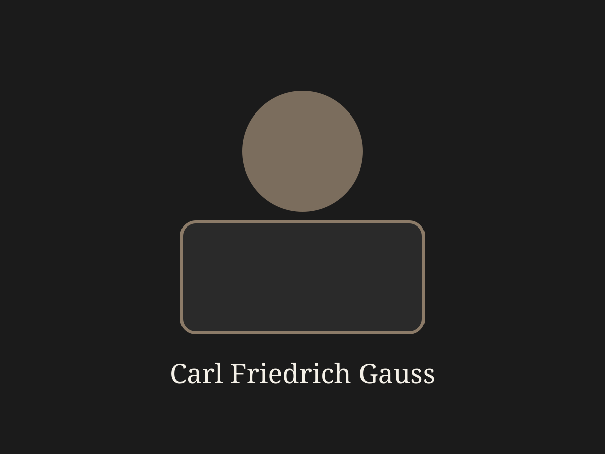
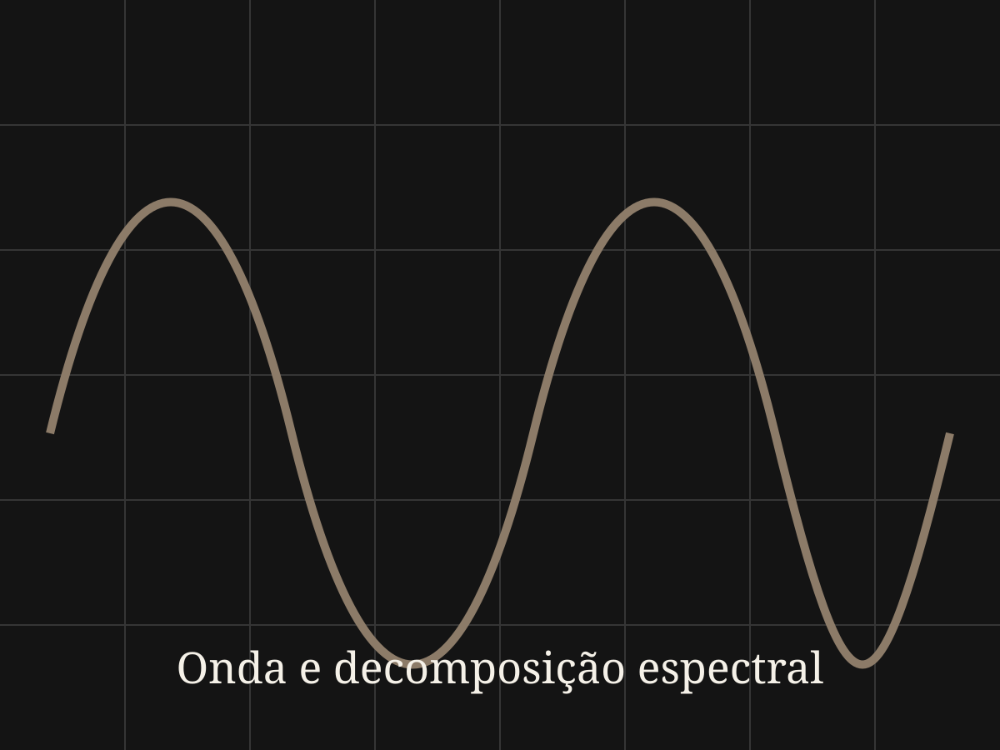

Ciência & Tecnologia
O Algoritmo Invisível que Governa o Mundo
Exemplo editorial completo refatorado para obedecer à sintaxe oficial do ToddyMarkDown.
Em 1805, Carl Friedrich Gauss estava com um problema de astronomia na cabeça. Nesta versão refatorada, o documento deixa de usar a sintaxe antiga em ::: e passa a obedecer ao formato oficial do ToddyMarkDown, preservando legibilidade em estado bruto e permitindo uma saída HTML editorialmente rica.
|>! [Isto não abre um bloco]
Tudo aqui dentro deve permanecer literal. |>## [Não interpretar] Nem esta linha deve virar sintaxe especial.
O que este documento demonstra?
Este arquivo mostra uma proposta de sintaxe híbrida e estritamente compatível com as specs.
Ela preserva o que o Markdown já faz bem — títulos, parágrafos, listas, citações e código — e adiciona apenas os blocos que realmente fazem falta para uma apresentação editorial mais sofisticada.
A ideia central
Markdown é excelente como formato de escrita, versionamento e organização. O problema dele não é estrutural; é visual. Seu poder cresce muito quando passa a alimentar um template HTML com CSS.
"O melhor texto-fonte é o que continua legível mesmo antes da renderização."
Conceitos principais
Frontmatter
Bloco de metadados no topo do documento usado para armazenar informações como título, subtítulo, autor, categoria, tema e modo de compilação.
Bloco customizado
Estrutura delimitada por |> e <| usada para representar componentes semânticos especiais, como caixas didáticas, citações destacadas, sínteses e composições com imagem.
O que deve virar sintaxe nova, e o que deve continuar sendo apenas Markdown normal?
A resposta mais saudável é: só vale criar sintaxe nova para aquilo que o Markdown realmente não consegue expressar com clareza suficiente.
Nota prática
Se um recurso puder ser resolvido apenas com ##, >, listas ou código cercado por crases, ele provavelmente deve continuar em Markdown puro.
Aviso de projeto
Quando a sintaxe customizada começa a parecer uma linguagem de programação paralela, o projeto já está escorregando para a selva ornamental.
Um pequeno fluxo de compilação
Linha do tempo do documento
Escrita — o autor produz o conteúdo em .tmd.
Texto intermediário em markdown normal, ainda ligado visualmente à mesma linha histórica do processo.
Parsing — o sistema lê frontmatter, escapes, blocos literais e blocos especiais.
Transformação — o parser converte a AST para HTML semântico.
Renderização — o HTML recebe um template visual e CSS editorial.
O .tmd continua sendo a fonte de verdade; o .html é a visualização compilada.
Exemplo de bloco com imagem lateral
Gauss em composição lateral
No modo *>, a imagem fica ao lado do texto, sem abraço. Isso favorece leitura estável, previsível e mais fácil de implementar em layouts responsivos.
- bom para documentação técnica
- bom para ensaios com legenda forte
- bom para evitar colisões de float

Onda à direita com abraço

No modo *>wrap, o texto abraça a imagem posicionada à direita. O efeito se aproxima mais de revistas diagramadas e de ensaios visuais.
Esse tipo de bloco é interessante quando a imagem serve como apoio visual contínuo, sem quebrar tanto o fluxo do parágrafo principal.
Imagem à esquerda sem abraço
No modo *<, a imagem vai para a esquerda, ainda sem abraço. É útil quando se quer variar o ritmo visual da página sem trocar a lógica estrutural do componente.
Imagem à esquerda com abraço
No modo *<wrap, o texto abraça a imagem à esquerda. Esse é o modo mais "revista impressa" entre os quatro e exige mais cuidado com altura, largura e responsividade.
Markdown comum continua valendo
Uma boa linguagem de marcação editorial não substitui o pensamento do autor; ela apenas o transporta com menos atrito.
Imagem markdown comum fora de bloco especial:
Código de exemplo
import fs from "fs";
import matter from "gray-matter";
import markdownIt from "markdown-it";
const md = markdownIt({ html: true });
const raw = fs.readFileSync("ensaio.tmd", "utf-8");
const { data, content } = matter(raw);
const htmlContent = md.render(content);Encerramento
Esse tipo de sistema é útil para blogs, ensaios, documentação curada, páginas de estudo e bases de conhecimento que precisem unir boa escrita com boa apresentação visual.